gutxi barru galdera sortak...
click egin behean nahi duzun atalara joateko
1 2 3 4 5 7Ariketak praktikatzeko, eta zuzentzeko... hemen klik egin!
Zenbaki konplexuak gai berri bat da. Termino berri bat ezagutzen dugu: i. Honen laguntzarekin lehen ariketa batzk 'soluzio gabekoak' zirenak, orain soluzioak lortuko dute.
Formula koadratikoa erabiltzean, lehen batzuetan erroaren barruan zenbaki negatibo bat geratzen zen. Ondorioz, iraganean formula edo eragiketa horiek 'erantzun gabekoak' ziren. Zenbaki konplexuekin, eragiketa hauei erantzunak emateaz gain, beste hainbat eragiketa gehiago egiteko ahalmena izango dugu
Zenbakiak, badakigun bezala, 'boltsa' askotan sartu ditzakegu. Esaterako, zenbaki errealak ditugu. Barruan, arrazionalak, irrazionalak, osoak eta arruntak ditugu. Baina, beste boltsa? Horiek zenbaki imaginarioak (edo irudikariak) dira, hau da, ez-errealak. Bai zenbaki irudikariak eta zenbaki errealak zenbaki konplexuak dira.
Bale, i! zer da i? i zenbaki irudikaria da. Bere balioa √-1 da. Aurrerako ikusiko dugu nola funtzionatzen duen.
Zenbaki konplexuak 2 zatiz osatuta daude.
Hasteko, zati erreala daukagu (a), eta beste aldetik zati irudikaria daukagu (b). Ondorioz, ikusi dezakegu zenbaki errealak eta irudikariak biak zenbaki konplexuak direla.
Nola?
Zenbaki irudikari puru batek, zati errealean 0 ko balioa izango du. Zenbaki erreal batek bestalde, zati irudikarin 0ko balioa izango du.
Bigarren mailako ekuzaioen ebazpena
Adibidea: z² + 2z + 5 = 0
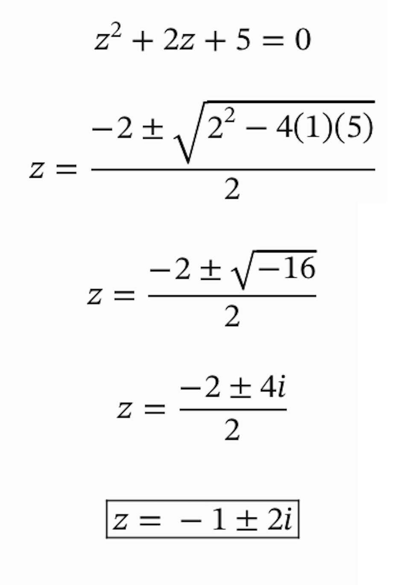
Ikusi dezakegun bezala 2 soluzio posible daude. Hauek konjugatuak dira.
Ondorio bat lortu dezakegu
Bigarren mailako ekuazio batek koefiziente errealak izan eta soluzio errealik ez duenean, bi soluzio irudikari ditu, eta horiek zenbaki konjugatuak dira
Zenbaki konplexuak grafikoki adierazi daitezke, (beste zenbaki kategoria bezala). Erabiliko dugun planoa 'plano konplexua' deitzen zaio. Plano konplexuan x eta y ardatzak ikusi ditzakegu. Y ardatza 'ardatz irudikaria' da, X ardatza berriz, 'ardatz erreala'. X ardatzean zati erreala adieraziko dugu, Y ardatzan zati imaginarioa.
adibide bat behar? 4+3i
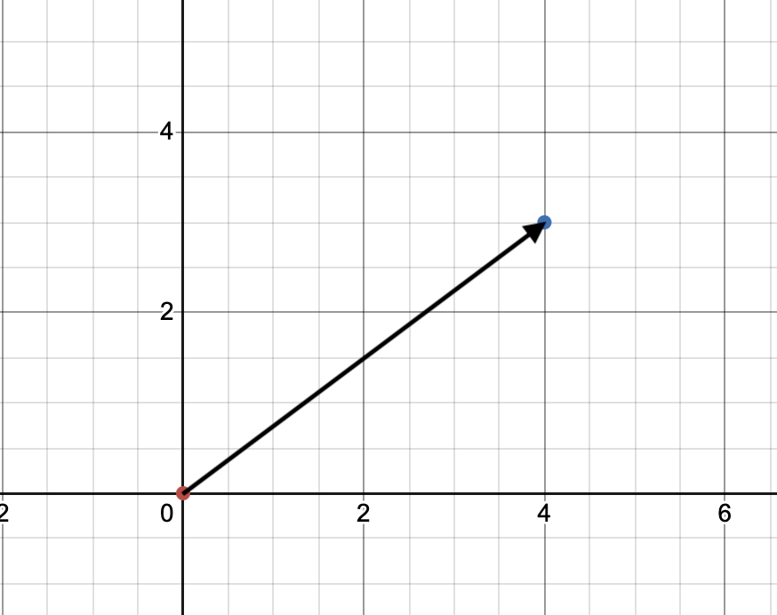
Ikusi dezakegun bezala, bektore hau (a,b) puntuan dago, bektore bat bezala! [gogoratu, a zati erreala, b imaginarioa]
Zenbaki konplexu baten zati irudikaria zeinuz aldatzen badugu haren konjugatua lortzen dugu. Azkenean, x ardatzarekiko simetrikoa da. Hau aurrerago lagungarria izango da (zatiketak...)
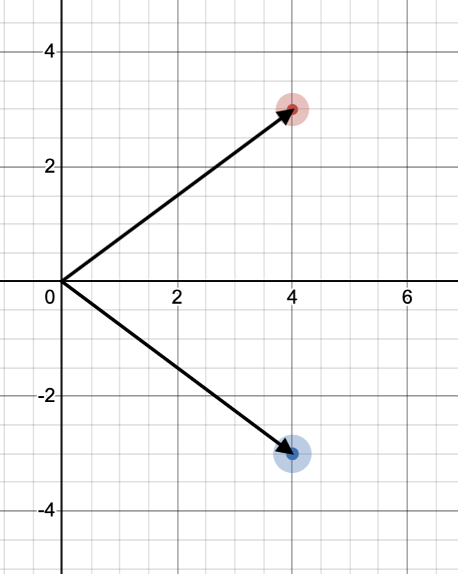
Zenbaki konplexuen batuketa, kenketa eta biderketa egiteko, i x bezala tratatuko dugu. Baina gogoratu, i²= -1 dela gogoratu.
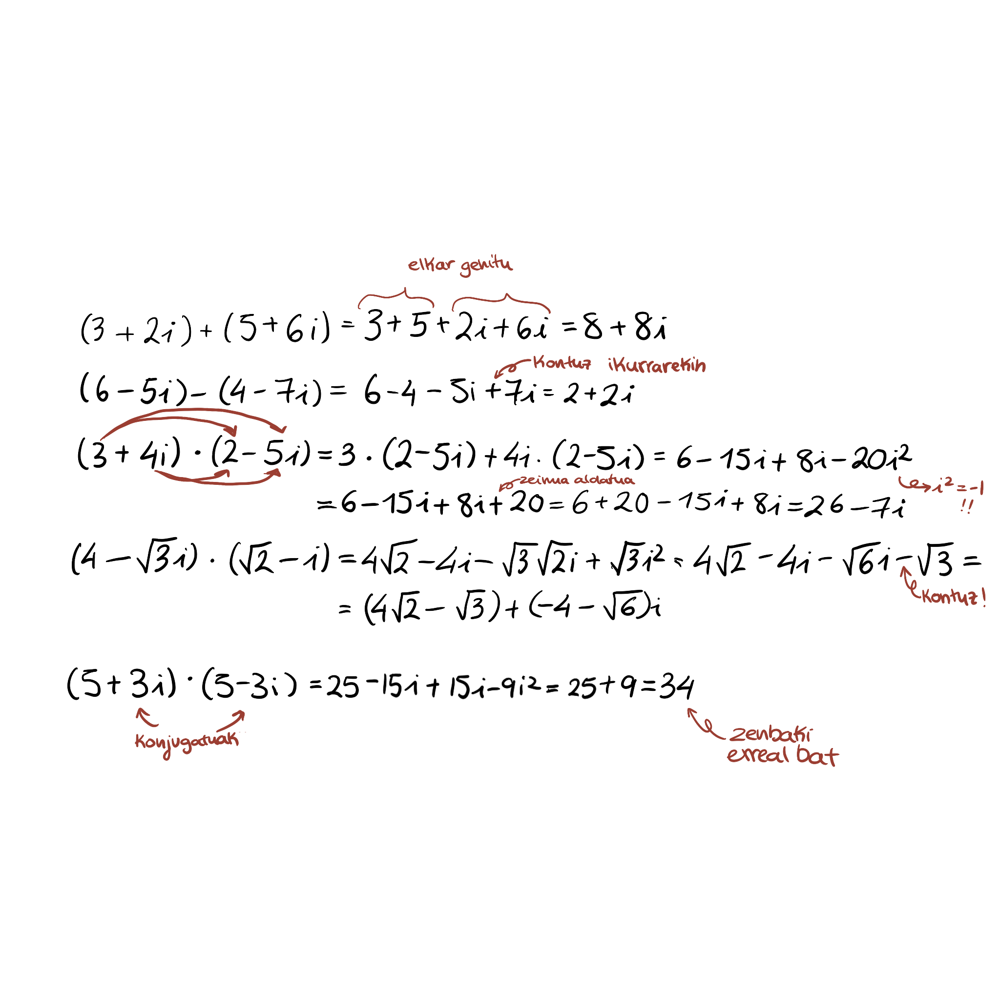
Azkeneko adibidean, zenbaki konplexu bat haren konjugatuarekin biderkatzean, zenbaki erreal bat agertzen da. Hori baliagarria izango da zatiketarako
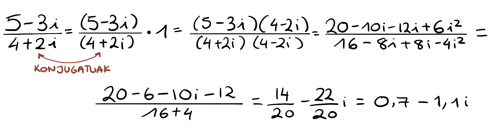
Zatiketan egiten duguna arrazionalizazioa bezalakoa da. Behetik i-a kendu nahi dugu. Ondorioz 1-ekin biderkatzen dugu. 1 hori zatiki bihurtzen da, zenbakitzailean eta izendatzailean lehenengo zatikiaren izendatzailearen (beheko zatia) konjugatua idazten dugu.
Lagungarria! Batuketa eta kenketan zenbaki imaginarioak bektore bezala tratatu, zenbaki errealak haien artean gehitu edo kendu, eta irudikariak haiekin. Biderketan x bezalako eragiketa bat egin, behin i ² lortzean, -1 bezala jarri, ariketa errazteko.
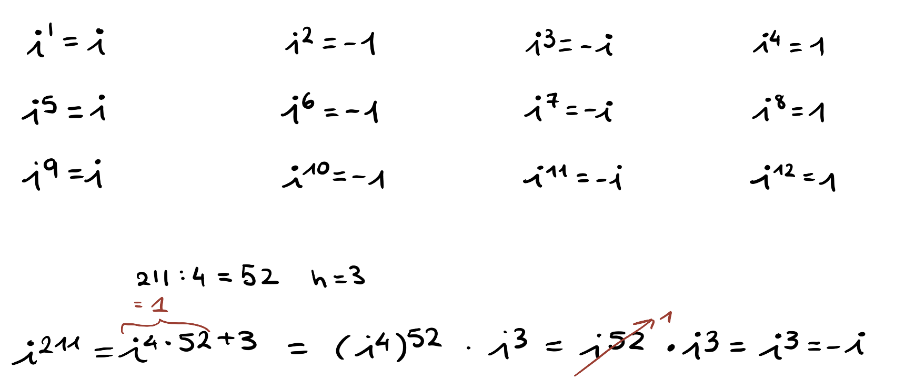
Goian ikusi dezakegu zenbaki konplexuen berreketak kate moduko bat osatzen dutela. Hori lagungarria izango da berretzaile handiko ariketak egiteko.
Goian ikusten den bezala, berretzailea 4-z zatituko dugu. Ondoren, hondarreren balioarekin jakingo dugu ea ze emaitza izango duen.
Newtonen binomioa ere erabili dezakegu hau kalkulatzeko (aurrerago azalduko)
GALDERA: zer da $i^2$?
$-1$
eman dezagun adibide bat, 4+3i esaterako.
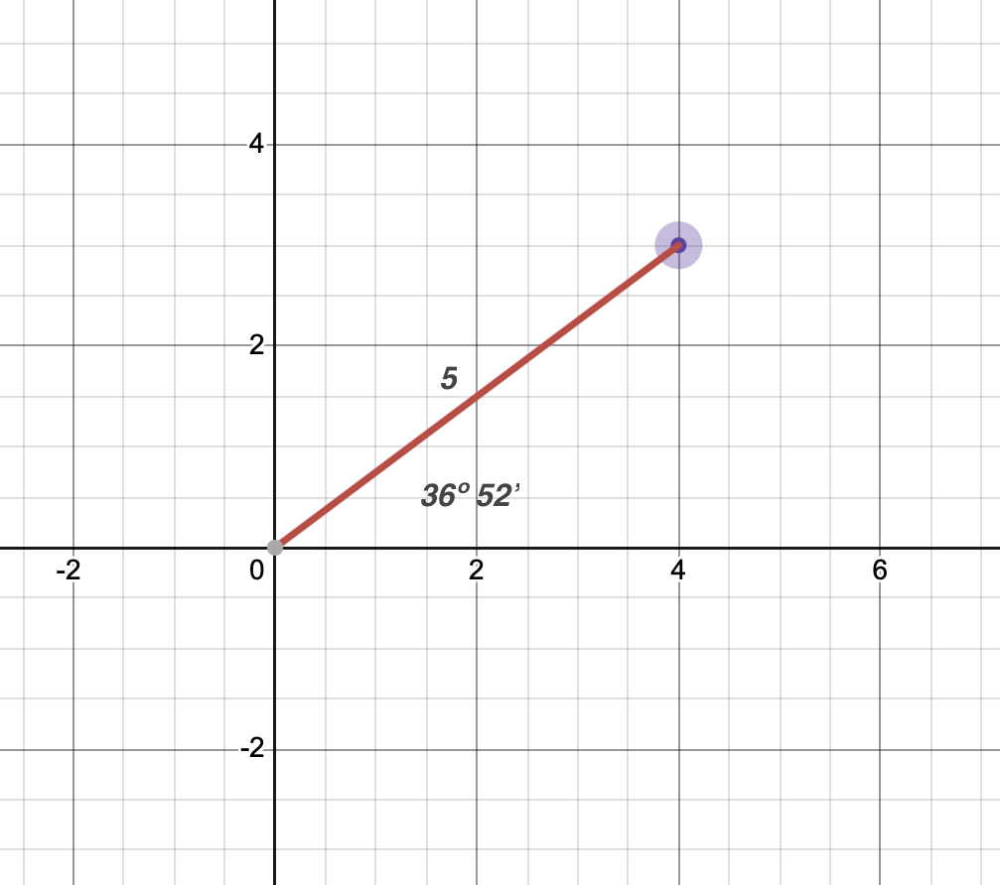
Zenbaki konplexu honek 5 unitateko luzera eta 36 ° 52' angelua du.
Modulua: 5 , argumentua: 36 ° 52' da.
Modulua: konplexu baten bektorearen luzera adierazteko balio du.
Nola adierazi? ⅠzⅠ
Argumentua: bektoreak ardatz errealarekin giten duen angeua. (z ≠0 )
Nola adierazi? arg (z)
Izendatzeko modu honeri forma modulu-argumentala edo polarra deitzen zaio
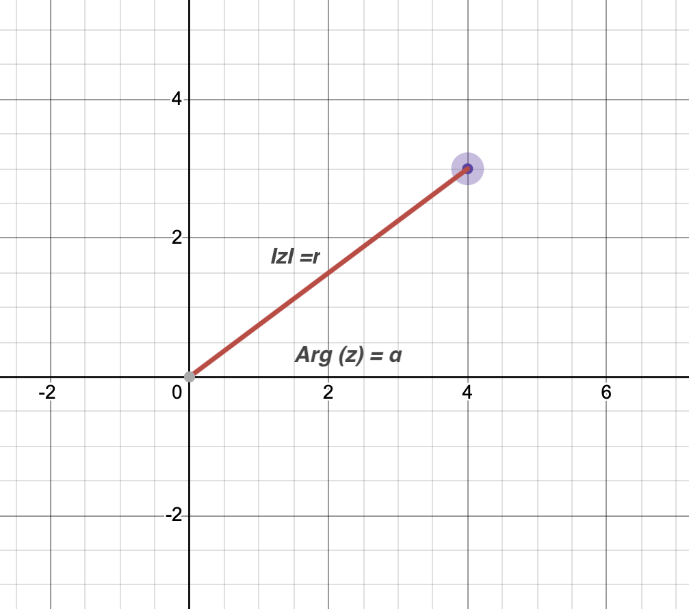
Zenbaki konplexu batek infinitu argumentu ditu.
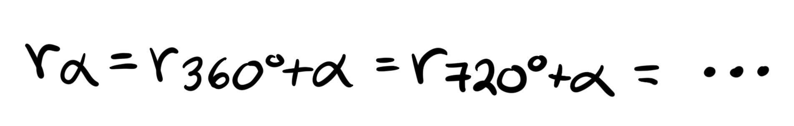
0 zenbaki konplexuak ez du argumenturik, beraz ezin da forma polarrean adierazi
z= m α zenbaki konplexu bat bada, orduan:
z= a + bi polarrera aldatzeko modulua eta argumentua lortu behar dugu
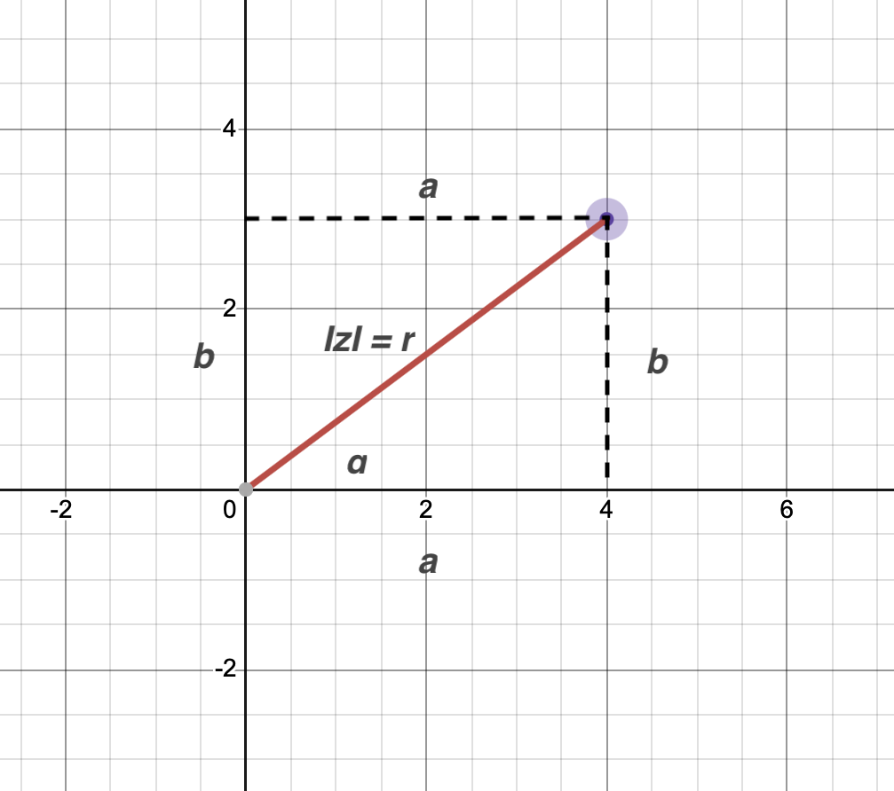
MODULUA
r= |z| = √ a² + b²
ARGUMENTUA
tg ɑ = b/a → ɑ = arctg b/a
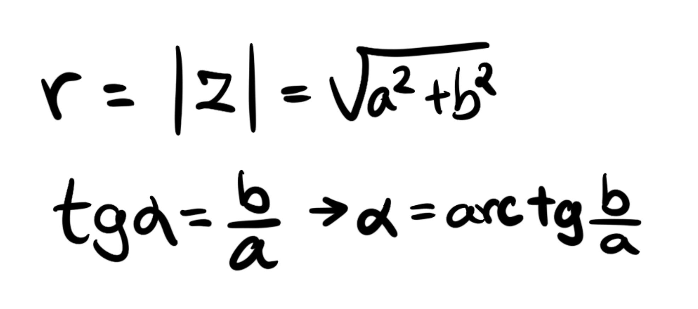
Alderantziz aurrekoa egiteko gauza batzuk jakin behar ditugu
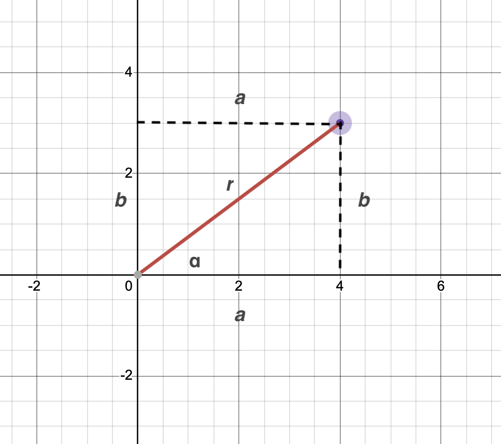
a= rcosɑ
b= rsinɑ
Hori jakinda, zenbaki konplexua horrela adierazi daiteke
z = r cos ɑ + ( r sin ɑ) = r (cosɑ+i sin ɑ)
z = r (cosɑ+i sin ɑ) adierazpenari forma trigonometrikoa deitzen zaio. Polarretik binomiora igarotzeko balio du.
Erlazio erraz eta erabilgarri batzuk daude bi zenbaki konplexuren eta zenbaki horien biderkaduraren eta zatiduraren forma polarren artean
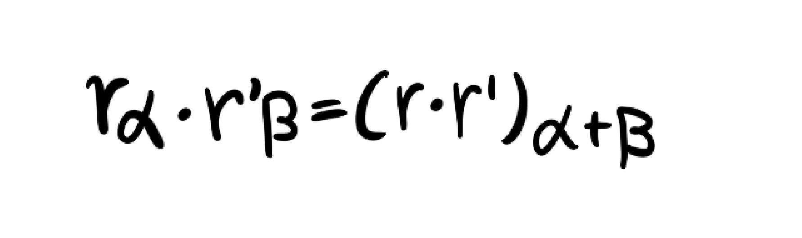
Bi biderkagaiak forma trigonometrikoan adieraziko ditugu
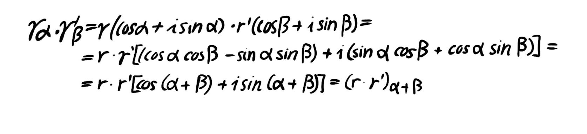
Egin bider 1β
z= rɑ konplexu bat bider 1β eginez gero z-k β angeluko bira egingo du jatorriaren inguruan:
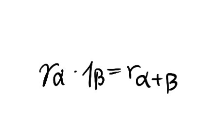
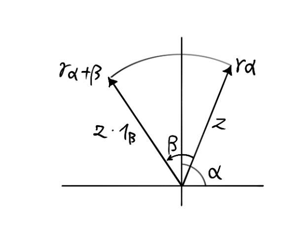
Bi zenbaki onpleuren arteko zatiketa egitean, modulua haien artean zatitzen dugu, eta argumentuen arteko kenketa egiten da.
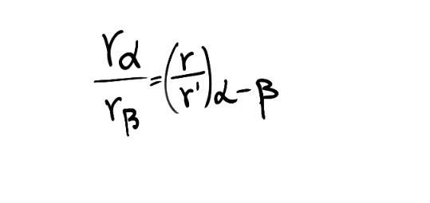
rɑ zenbakia
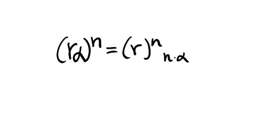
Zenbaki konplexuen berreketaren propietateak erabiliz, Moivreren formula esaten diogun honako formula hau lortzen dugu:
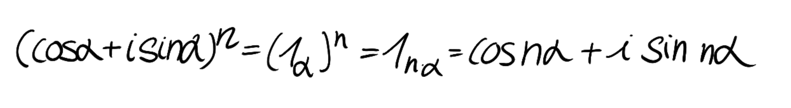
Trigonometrian erabilgarriak dira.
Egiaztapena
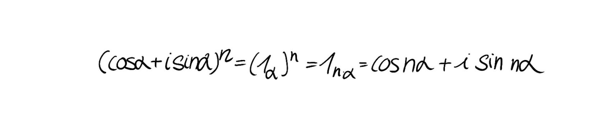
Zenbaki erreal positiboek 2 erro karratu dituzte.
Adibidez, 4ren erroa 2 eta -2 dira.
Zenbaki erreal negatiboek 2 erro irudikari dituzte.
Adibidez, -4ren erroa 2i eta -2i dira.
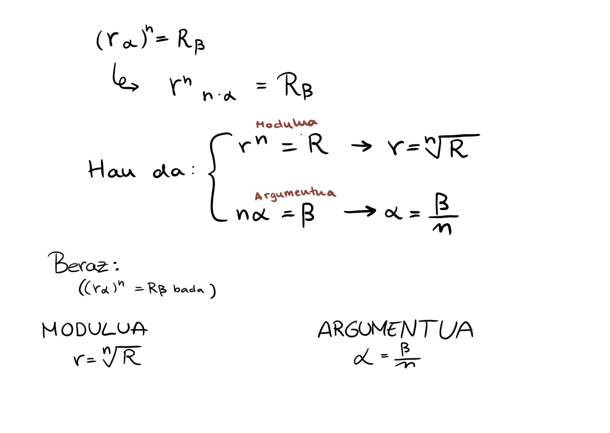
Ikusi dugunez, konplexu baten argumentua β zein
β+360 ° zein β+720
° etb. Baina angelu horiek
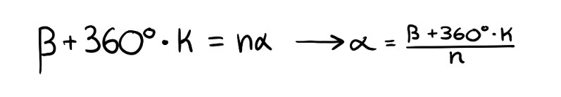

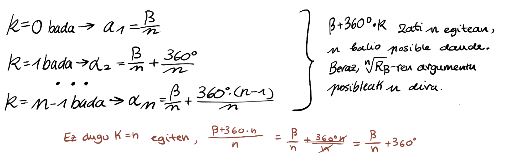
Argumentuak hauek izango dira:
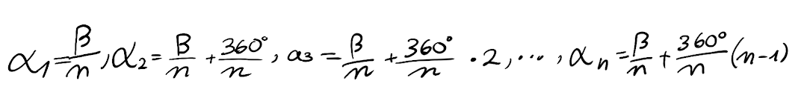
z= a + bi dugunean, z zenbaki konplexuaren afixua (a,b) puntua da. Afixuaren koordenatuak Re (z)=a eta Im(z)=b dira.
Koordenatu horiek jarri ditzakegu modu analitikoan, eta ekuazioak eta inekuazioak ere landu ditzakegu.

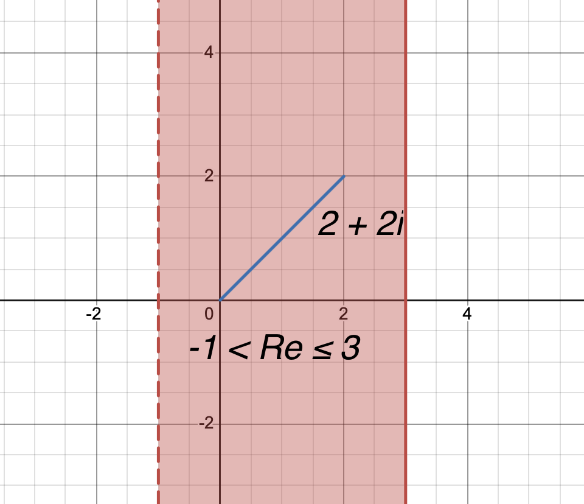


z |z| modulua edo
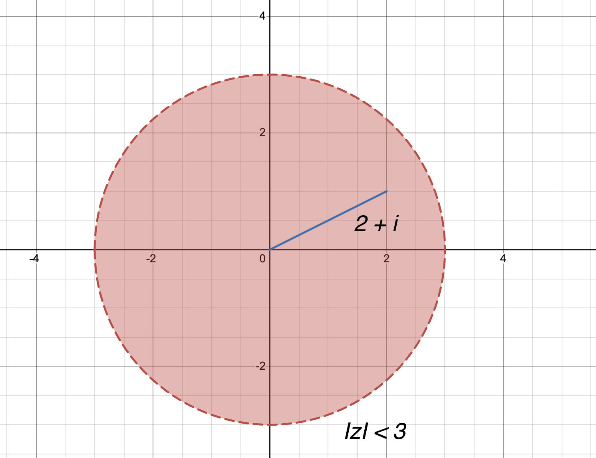
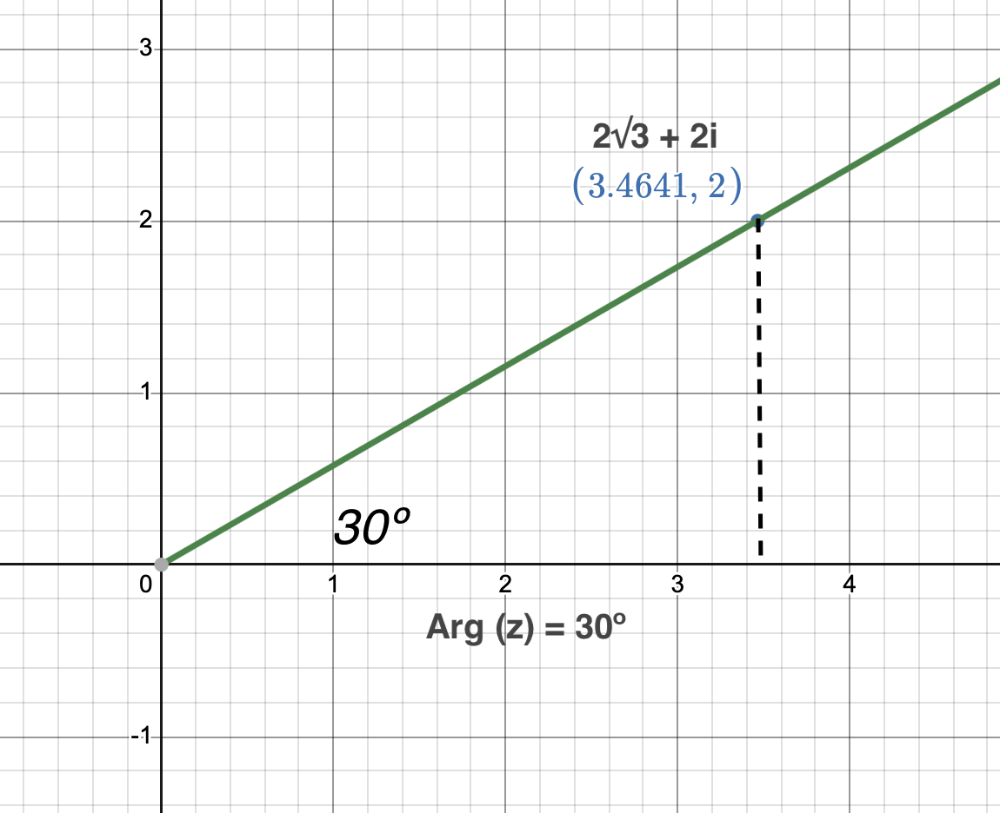